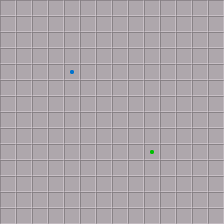
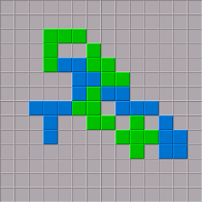

The game variant Duo is another game variant for two players. The game is played on a smaller board with 14×14 squares. There is only one color per player (Blue and Green) and the starting squares are not in the corners, but on the square with the coordinates (5,10) for Blue, and on (10,5) for Green.
The 14×14 board used in game variant Duo with
the starting squares marked with colored dots:

An example position in game variant Duo:
